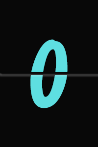

<!doctype html>
<html lang="en">
<head>
    <meta charset="UTF-8">
    <title>Document</title>
    <link rel="stylesheet" href="css/global.css">
    <link rel="stylesheet" href="css/11-date.css">

</head>
<body>
<div id="blockBox1">
    
</div>


<div id="blockBox2" class="clear box2">
</div>


<div id="blockBox3" class="clear box2">
</div>


<script>

/*系统时间对象*/
var myTime=new Date();
   console.log(myTime);  //当前 电脑系统时间的对象
    console.log(myTime.getFullYear());  // 年
    console.log(myTime.getMonth()+1);  // 月 从0~11 想得到正常月份 需要+1
    console.log(myTime.getDate());  // 日
    console.log(myTime.getHours()); //时
    console.log(myTime.getMinutes()); //分
    console.log(myTime.getSeconds()); //秒
console.log(myTime.getDay());  // 星期 返回数值 0-6 周日-周六
    var week=myTime.getDay(),
        weekArr=['日','一','二','三','四','五','六'];
    console.log('星期'+weekArr[week]);


   var block1=document.getElementById("blockBox1");
   var block2=document.getElementById("blockBox2");
   var block3=document.getElementById("blockBox3");

   var blockObj={
       init:function(){
           this.block1Init();
           this.block2Init();
           this.block3Init();
       },
       /**
        * 获取系统时间
        */
       sysBlock1:function(){
           var times=new Date();
           var y=times.getFullYear(),M=times.getMonth()+1,d=times.getDate(),
               h=times.getHours(),m=times.getMinutes(),s=times.getSeconds(),
               w=times.getDay();
               block1.innerHTML=`今天是${y}年${this.singleNumDeal(M)}月${this.singleNumDeal(d)}日${this.singleNumDeal(h)}时${this.singleNumDeal(m)}分${this.singleNumDeal(s)}秒&nbsp;星期${weekArr[w]}`;
       },
       block1Init:function () {
           var that=this;
           this.sysBlock1();
           setInterval(function(){
               that.sysBlock1();
           },1000);
       },
       block2Init:function(){
            var that=this;
            this.imgBlock();
            setInterval(function(){
                that.imgBlock();
            },1000);

       },

       block3Init:function(){
           var that=this;
           this.aniBlock();
           setInterval(function(){
               that.aniBlock();
           },1000);

       },

       /**
        * 图片时钟
        */
       imgBlock:function(){
           var times=new Date();
           var h=this.singleNumDeal(times.getHours()),m=this.singleNumDeal(times.getMinutes()),s=this.singleNumDeal(times.getSeconds()),
               timeStr=''+h+':'+m+':'+s,timeStrArr=timeStr.split(''),pointStr='<div class="img-wrapper"></div>',
               showStr='';
           for(var i=0;i<timeStrArr.length;i++){
               if(timeStrArr[i]==':'){
                   showStr+=pointStr;
               }else{
                   timeStrArr[i]='0'+(timeStrArr[i]-0+1);
                   showStr+=`<div class="img-wrapper"></div>`;
               }
           }
           block2.innerHTML=showStr;

       },
       lastTimeObj:'',
       /**
        * 动画时钟
        */
       aniBlock:function(){
           var times=new Date();
           var h=this.singleNumDeal(times.getHours()),m=this.singleNumDeal(times.getMinutes()),s=this.singleNumDeal(times.getSeconds()),
               timeStr=''+h+m+s,timeStrArr=timeStr.split(''),pointStr='<div class="img-wrapper"></div>',
               showStr='';
               changeNum=0;
            // 判断从哪改变的
           for(var k=0;k<timeStr.length;k++){
                   if(timeStr[k]!=this.lastTimeObj[k]){
                       changeNum=k;
                       break;
                   }
               }
           // 不改变的位置正常循环
           for(var m=0;m<changeNum;m++){
               var curImg=``,
                   nextImg=timeStrArr[m]==9?``:``;
               var pStr='';
               if(m==1 || m==3){
                   pStr=pointStr;
               }
               showStr+=`<div class="img-wrapper">${curImg}${nextImg}</div>${pStr}`;
           }
          //  改变的位置到结束都要有动画
          for(var i=changeNum;i<timeStrArr.length;i++){
               var pStr='';
               if(i==1 || i==3){
                   pStr=pointStr;
               }
              var curImg=``,
                  nextImg=``;
                  showStr+=`<div class="img-wrapper">${curImg}${nextImg}</div>${pStr}`;
           }
           block3.innerHTML=showStr;
           this.lastTimeObj=timeStr;
       },

       /**
        * 单个数值处理
        * @param num
        */
       singleNumDeal:function (num) {
           var n=num>=10?num:'0'+num;
           return n;
       }

   };

   blockObj.init();


    
    


</script>


</body>
</html>